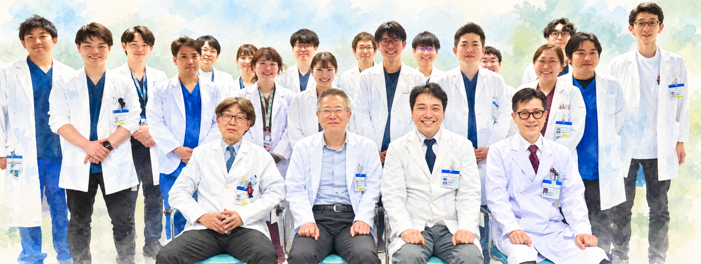
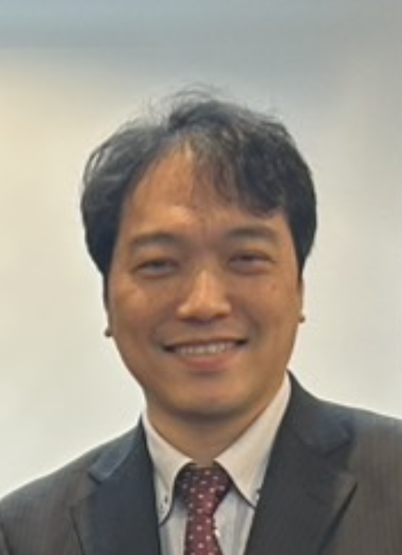
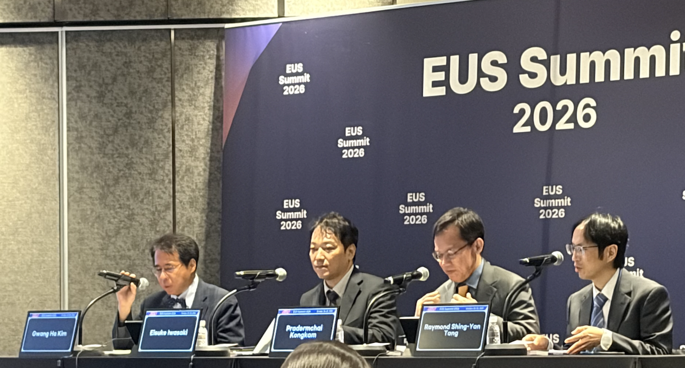
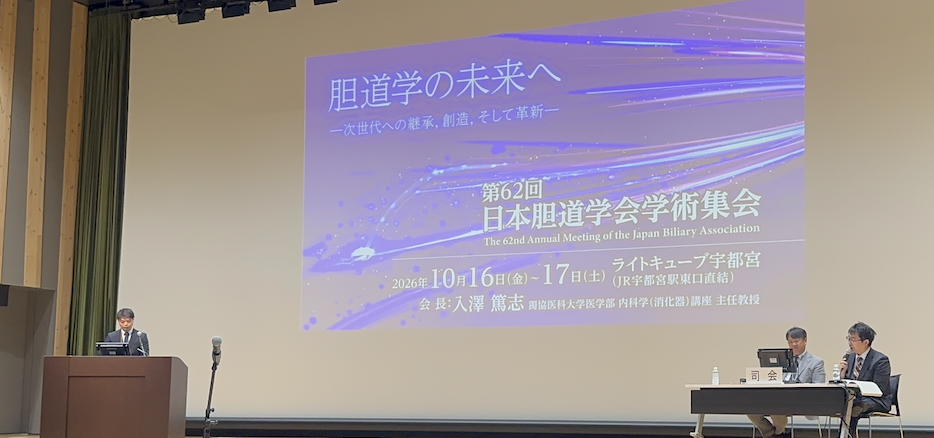
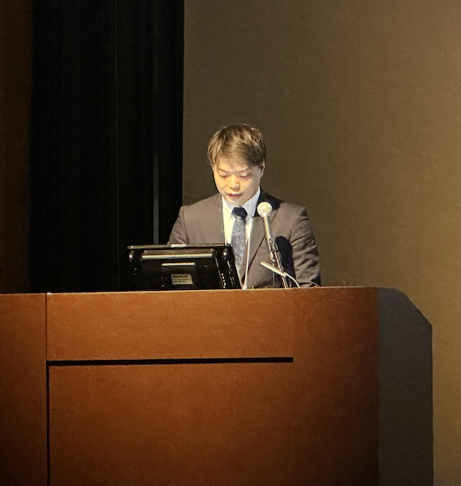

消化器内科のご紹介
東海大学医学部付属病院は、神奈川県の県央・県西地区の中核病院として、多様な疾患や専門性の高い症例に対応しています。当科では「消化管」「肝臓」「胆膵」の3グループが連携し、幅広い臨床経験と専門性を身につけられる研修環境を整えています。少人数だからこそ一人ひとりを大切に育て、経験や習熟度に応じた指導を通じて、豊富な症例に主体的に関わる機会を支えます。学会活動や診療ガイドライン作成に携わる指導医とともに、診療・内視鏡の知識や技術を磨き、患者さんの心に寄り添う「良医」を目指します。
経験や出身大学、性別、国籍を問わず、私たちと学び、働きたい先生を広く歓迎します。本院・八王子病院・関連病院の連携を活かし、臨床を深めたい、研究に取り組みたい、博士号を取得したいといった希望に応じて、研修や進路を一緒に考えます。見学や短期・長期の研修も受け付けていますので、お気軽にご相談ください。
消化器内科 領域主任教授 岩崎栄典

活動・業績報告
活動報告（行事・学会参加など）
医局行事・学会参加・学会発表・受賞・学術集会の開催
枠内をスクロールすると過去の報告をご覧いただけます。
来年度（2027年度）の専攻医・助教の募集を継続しています。私たちとともに学び、働く仲間になってくださる先生を引き続きお待ちしています。また、内視鏡や胆膵内視鏡処置などのトレーニングをご希望の先生も、ぜひご相談ください。
岩崎栄典先生が、韓国・ソウルで開催されたEUS Summit 2026で、ライブセミナーの司会とEUS-FNAに関する講演を行いました。

2026.10.16–17
第62回日本胆道学会学術集会（宇都宮）で、東海大学医学部消化器内科の白滝理博先生が口頭発表を行いました。
演題番号：SP3-3-8
演題：悪性遠位胆道狭窄に対する Multi-hole covered metallic stent の有効性と安全性：単施設後方視的検討


2026.04.19
4月16-18日に福井・金沢で第112回日本消化器病学会総会が行われ、永田先生、鶴谷先生、佐野先生、森町先生、柿澤先生が発表を行いました。また、複数の先生が座長などの任を務めました。中でも、若手優秀演題カンファレンスにて柿澤先生が3位入賞を果たしました。
2026.03.13
2025年度医局歓送迎会を開催しました。本院、分院、関連病院からの近状報告と退職される教員、新任される教員からの挨拶があり、盛大に盛り上がりました。
2026.02.20
2月20-22日に熊本で第21回日本消化管学会総会が行われ、佐野先生と吉原先生が発表を行いました。
2026.01.10
昨年は大変お世話になりました。今年もよろしくお願いいたします。昨年末には仕事納めの会を開催しました。
2025.12.17
東海大学理学部化学科の関根嘉香教授が会長を務める「第１回皮膚ガス研究会大会」が、12月17日に東京都・建築会館で開催されました。本教室から森町先生が「皮膚ガス分析を用いた新規膵臓がん診断法の開発」をテーマに講演を行いました。
2025.12.14
12月13,14日に第22回日本消化管学会総会関東支部例会が行われ、研修医の西條先生が『超音波内視鏡下膵管ドレナージが奏功した膵頭部癌による閉塞性膵炎の 1 例』を発表しました。消化器内科は研修医が発表する機会が多くありますので、学会参加を経験してみたい研修医はバシバシ上級医に声をかけてください。将来何科を専攻するにせよ、研修医での学会発表の経験は大きく活かされることでしょう。
2025.11.23
11月20日から22日までアジア太平洋消化器病週間（APDW 2025) がシンガポールで開催され、森町先生が発表しました。
2025.11.12
米国肝臓学会2025が11月7日から11日までワシントンDCで開催されました。当科の荒瀬准教授、鶴谷講師、看護学科の庄村教授、マトリックス医学生物学センターの柳川先生が発表、熱心なdiscussionが行われました。
2025.11.02
今年も神戸でJDDW2025が行われ、複数の医局員が演者、座長として参加しました。
2025.09.27
9月25、26日に加川教授を大会長として京王プラザホテルにて第4回日本肝臓学会International Liver Conference 2025が開催されました。国内外の多くの方々にご参加いただき、本当にありがとうございました。
2025.09.13
9月13日、横浜で第34回消化器疾患病態治療研究会が開催され、菊地先生が専攻医アワード最優秀賞を受賞しました。
2025.09.12
9月11～12日、奈良県で第32回日本門脈圧亢進症学会総会が開催され、加川教授、荒瀬准教授、鶴谷講師が参加いたしました。
2025.08.21
医局説明会を開催しました。多数のご参加ありがとうございました。
東海大学は神奈川県西唯一の大学病院で圧倒的症例数があります。また、都内、横浜へは1時間圏内です。
関連病院も鉄道で1時間圏内にしかなく、異動が少ないのも特徴です。皆様と働ける日を楽しみにしています。
2025.07.12
7月12日（土）東京海運クラブで第385回 日本消化器病学会 関東支部例会が加川建弘教授を大会長として開催されました。さらに医局から柿澤先生、菊池先生、吉田先生、田澤先生、雁金先生が発表を行い、盛況に開催されました。
2025.06.07
6月7日（土）14時から16時まで、内視鏡ハンズオンセミナーを開催しました。上部内視鏡、下部内視鏡、ESD、腹部超音波のトレーニングができるセミナーで、研修医、学生含め30人を超える参加があり大盛況でした。随時見学、入局お待ちしております。東海大学では若手にもしっかりしたバックアップの下、多くの症例にチャレンジすることができます。
2025.06.06
6月5日から6日までホテルニューオータニで第61回日本肝臓学会総会が行われました。医局から、鶴谷康太講師が「親水性メタボローム解析を用いた薬物性肝障害新規バイオマーカーの同定と特性評価」を、三島佑介助教が「Fxr欠損マウスを用いた肝内胆汁うっ滞症新規治療薬の開発」を、荒瀬吉孝准教授が「脂肪性肝疾患診療におけるFatty Liver Index(FLI)の有用性の検討」を、広瀬俊治講師が「アテゾリズマブ+ベバシズマブ併用療法中の有害事象に対して副腎皮質ホルモン剤を使用した症例の予後に対する検証」を、看護学科の庄村雅子教授が「進行肝細胞がん患者に対するアテゾリズマブ+ベバシズマブ併用療法におけるPatient Oriented Outcomeに着目した治療効果予測因子の解析」を発表しました。また、加川教授がパネルディスカッション「薬物性肝障害の現状と展望」の司会を務めました。各セッションでは活発な討論があり、非常に有意義な学会でした。
2025.05.25
5月22日から24日までミナカ小田原で第50回日本微小循環学会総会と第78回日本酸化ストレス学会学術集会が鈴木秀和教授を大会長として開催されました。
2025.05.15
5月3日から6日までサンディエゴでDDW2025(米国消化器病週間)が開催され、鈴木秀和教授、岩崎教授、佐野先生が参加しました。
2025.03.14
本院、分院、関連病院からの近状報告と退職される教員、新任される教員からの挨拶があり盛大に盛り上がりました。新しい仲間が加わった当科を来年度もよろしくお願いいたします。
2025.03.04
白石教授の退任記念公演が行われました。白石先生、約40年間、ご指導ありがとうございました。
2025.02.28
前回大変好評につき、今年度2回目の内視鏡ハンズオンセミナーを開催しました。他科のDr.、研修医、学生など多くの方にご参加いただきました。来年度もまたよろしくお願いします。
2024.12.28
いつもご覧いただきありがとうございます 。医局員、外来スタッフ、内視鏡スタッフの有志で仕事納めの会を開催しました。 本年も皆様には大変お世話になりました。来年も何卒よろしくお願い申し上げます。
2024.12.06
2024年12月6日-7日仙台で肝臓学会東部会が行われ、鶴谷康太講師がパネルディスカッション「薬物生肝障害のマネジメント」で「当院におけるタモキシフェン起因性脂肪性肝疾患治療の実態」を発表しました。
2024.11.30
11月30日（土）小田原天成園にて第45回胆汁酸研究会が開催されました。京都府立医科大学大学院医学研究科生体免疫栄養学の内藤裕二教授のご講演「ガットフレイルとPersonal
Health Record (PHR)」も非常に好評でした。
2024.11.24
11月21日から24日までアジア太平洋消化器病週間（APDW 2024) がバリで開催され、鈴木教授、佐野先生、川西先生、張先生が発表しました。
2024.11.15
2024年11月15日(金) ～ 2024年11月19日(火)」サンディエゴにてAASLD（アメリカ肝臓学会）2024が開催され、鶴谷康太講師が「Impact of lipophilicity and daily dose on drug-induced liver injury in the Japanese cohort」、「Pemafibrate improves liver function with alteration of bile acid composition in patients with steatotic liver disease」の２題を、三島祐介助教が「Liver-specific FXR deletion with human-like bile acid composition mice by in vivo gene editing using adeno-associated virus and CRISPR/Cas9 System」を発表しました。
2024.11.12
加川教授が当番世話人として11月９日（土）横浜シンポジアにて第56回神奈川消化器病医学会総会を開催しました。特別講演は東海大学医学部内科学系循環器内科学の後藤信哉教授に「内科学への高性能コンピューターの応用ーAI
の光と影ー」と題して、AIの負の側面を含めてお話しいただき、大変好評でした。一般演題も興味深い報告が多く、ディスカッションも盛り上がりました。
2024.07.06
消化器内科ハンズオンセミナーを開催しました。多くの方にご参加いただきました！随時見学も大歓迎です。
2024.06.10
6月13日（木）、14日（金）、熊本城ホールにて、熊本大学 田中靖人会長のもと、第60回日本肝臓学会総会が開催されました。加川教授がワークショップ「肝疾患と臓器相関（胆汁酸，Microbiome含む） で特別発言を、荒瀬吉孝講師が「自己免疫性肝炎に合併した骨粗鬆症に対するデノスマブの有効性，安全性の検討」、「脂質異常症合併脂肪性肝疾患に対するペマフィブラートの有効性の検討」を、広瀬俊治講師が「過去20年における初発食道胃静脈瘤の変化―ウイルス性と非ウイルス性の比較―」を、鶴谷康太講師が「2型糖尿病合併脂肪性肝疾患に対するSGLT2阻害薬の有効性と腸内細菌叢に与える影響の解析」を、三島佑介先生がワークショップ「肝疾患と臓器相関（胆汁酸，Microbiome含む） で「ヒト型胆汁酸マウスを用いたFXR欠損進行性家族性肝内胆汁うっ滞症モデル動物の作成」を、医学部看護学科の庄村雅子教授が「進行肝細胞がん患者においてアテゾリズマブ＋ベバシズマブ併用療法がHealth-related Quality of Lifeに与える影響と予後との関連」を、医学部看護学科の佐藤えみさんが「代謝異常関連脂肪肝疾患患者における認知行動療法によるライフスタイル変容効果の検証プロトコル」を発表しました。共同研究者の発表を含め、計9つの発表があり、それぞれ高い評価を受けました。
2024.05.26
5月18日から21日までワシントンでDDW2024(米国消化器病週間)が開催され、佐野先生と鈴木秀和教授が発表を行いました。
2024.05.11
5月9日から11日まで徳島で第110回日本消化器病学会総会が開催されました。藤澤先生が「Fanconi貧血に関連した食道癌」、荒瀬先生が「自己免疫性肝疾患に合併した骨粗鬆症に対するデノスマブの有効性，安全性の検討」、森町先生が「当院における腹部外傷に対するERCP症例の検討」、小村先生が「実臨床におけるB型慢性肝炎に対する核酸アナログの投与成績について」を発表しました。
2024.03.15
5年ぶりに対面での医局歓送迎会を開催しました。
2024.03.08
内視鏡ハンズオンセミナーを開催し、ESDやEUS-CDのトレーニングを行いました。
2024.02.20
2月17日に日本消化器病学会関東支部第378回例会が開催され、東海大学医学部附属東京病院の幕内智規先生が「アテゾリズマブ+ベバシズマブ療法中に
Pseudo progression を引き起こした肝癌の一例」を発表し、専攻医奨励賞を受賞しました。
また、初期研修医 豊田達也先生が，「著明な巨大食道裂孔ヘルニアの1例」を発表してくれました
2024.02.09
沖縄で開催された日本消化管学会総会にて、上田先生、佐野先生、鈴木秀和教授が発表を行いました。そして、上田先生の「急性出血性直腸潰瘍の臨床的特徴・再出血リスク因子の検討」という発表が学術奨励賞を受賞しました。
2023.12.16
日頃お世話になっている看護師やコメディカルの皆さんにご参加いただき、数年ぶりに有志による忘年会を開催しました。日頃の診療から少し解放されて賑やかな宴会となりました。
2023.12.12
12月6日から9日までアジア太平洋消化器病週間（APDW 2023) がタイのバンコクで開催され、川西先生、寺邑先生、佐野先生、金子先生が発表しました。
2023.12.09
12月9日に東京で開催された消化器病学会 関東支部地方会にて研修医の後藤先生が発表を行い奨励賞を受賞しました。
2023.12.01
11月25日に横浜で開催された第55回神奈川県消化器病医学会総会にて、上田先生が「経過観察中に寛解と再燃を起こした低異型度虫垂粘液性腫瘍の1例」、辻先生が「膵神経内分泌癌による異所性ACTH産生症候群の1例」を発表しました。
2023.11.24
11月19日にレイクウッドゴルフクラブで消化器内科同門会ゴルフコンペを開催しました。3年ぶりの開催であったことに加え、天気にも恵まれ、大いに盛り上がりました。
2023.11.17
11月10日から11月14日までアメリカ肝臓学会 AASLD 2023がボストンで開かれ、鶴谷講師、荒瀬講師、看護学部の庄村教授が発表しました。
2023.11.10
11月2日から4日までJDDWが神戸で開催されました。鶴谷講師がワークショップ「薬物性肝障害の診断基準改訂を目指して」で「新しく提唱されたRECAMによる薬物性肝障害の評価」を発表しました。また、広瀬講師が「過去20年における初発食道胃静脈瘤成員別頻度の変化」、藤澤講師が「当院におけるLSBE症例の経過に関する検討」をそれぞれポスター発表しました。
2023.10.21
10月20日に第７回 東海肝臓病研究会が開催されました。
金沢大学消化器内科学 山下太郎教授、熊本大学消化器内科学講座 田中靖人教授にご講演いただきました。最新のデータをお示しいただき、ディスカッションも盛り上がりました。
2023.10.17
金子先生、佐野先生、鈴木秀和教授がウィーンで行われたUEGW2023(欧州消化器病週間)にて発表を行いました。
2023.07.15
7月8日に横浜ランドマークタワー にて第67回 神奈川県消化器病研究会が開催され、研修医の菊地毅弘先生が鶴谷講師の指導のもと、『妊娠中にCOVID-19による急性肝不全をきたした1例」を発表し、優秀演題賞を受賞しました。
2023.06.18
6月15日、16日に奈良県で第59回日本肝臓学会総会が開催され、当科から加川教授、荒瀬講師、鶴谷講師、広瀬講師、三島先生が、看護学科から庄村教授が発表を行いました。
2023.06.03
内視鏡ハンズオンセミナーを開催しました。
多くの方にご参加いただき、ありがとうございました！随時見学も大歓迎です。
2023.05.08
【学内向け】6/3(土)14時から内視鏡ハンズオンセミナーを開催します
2023.04.19
2023年4月14日から16日まで日本内科学会総会・講演会が行われ、「医学生・研修医・専攻医の内科学会ことはじめ」で、当科の田澤遥介先生が演題「MYO5Bの変異が原因と考えられた良性反復性肝内胆汁うっ滞症の一例」を発表し、優秀演題賞を受賞しました。田澤先生には賞状と副賞の聴診器が贈呈されます。
2023.04.12
4月6日から8日まで長崎の出島メッセで第109回日本消化器病学会総会が開催されました。藤澤先生が「乳癌胃転移の5例」、今井先生が「脂肪肝の新基準MAFLDは将来の代謝性への治療介入予測となる」、寺邑先生が「アスピリンによる腸内細菌叢変化に対するプロバイオティクスの影響」、森町先生が「当院における胆嚢癌症例の検討」を、それぞれ口頭発表し、参加者と活発なディスカッションを行いました。
2023.03.17
2022年度東海大学消化器内科の歓送迎会がWEBで挙行されました
2022.10.27
福岡で開催されたJDDW2022(日本消化器関連学会週間)にて松嶋教授、広瀬先生、永田先生、藤澤先生、津田先生、川西先生が発表を行いました
2022.10.08
佐野先生、鈴木秀和教授がウィーンで行われたUEGW2022(欧州消化器病週間)にて発表を行いました
2022.08.25
白石教授のもと、9月8日-10日にアルコール・薬物依存関連学会合同学術総会が開催されます
2022.07.10
上田先生、今井先生、鈴木秀和教授がサンディエゴで行われたDDW2022(米国消化器病週間)にて発表を行いました。
2022.07.08
東海大学医学部内科学系の合同入局説明会が開催されます
2022.07.01
ホームページを開設しました
業績報告（論文・書籍など）
論文・書籍などの研究業績
枠内をスクロールすると過去の報告をご覧いただけます。
鶴谷康太先生が「Journal of Gastroenterology」に「Healthcare burden and clinical spectrum of symptomatic polycystic liver disease in Japan: a nationwide epidemiological survey.」を発表しました。
症状や合併症のある多発性肝嚢胞症について、国内の患者数、症状、治療状況を調べた全国疫学調査です。2023年に診療・経過観察を受けた患者数は推計3,570人で、人口100万人あたり28.6人でした。詳細な情報を得た557人では、腹部膨満・腹痛・嚢胞感染が多く、半数以上が肝嚢胞の治療を受けていました。疾患の重症度評価や診療体制の検討に役立つ基礎データを示しています。
佐野先生が「Arab Journal of Gastroenterology」に「Efficacy of deeper tissue sections for colorectal serrated polyps histologically diagnosed as normal mucosa.」を発表しました。
内視鏡で鋸歯状ポリープが疑われたものの、病理で正常粘膜と判定された大腸病変に対し、追加の深切り切片で再評価した研究です。対象117病変のうち58病変で診断が変更され、病理切片の追加が診断の改善に役立つ可能性を示しました。変更の多くは過形成性ポリープで、SSLと再診断された病変は5病変でした。
岩崎栄典先生が「Digestive Endoscopy」に「Deus Sine Machina: Which Intelligence, for Whom.」を発表しました。
内視鏡分野のAIを、医療資源の限られた地域で誰のために活用するかを論じた論考です。技術の性能だけでなく、地域ごとの疾病負担や未充足の医療ニーズを踏まえ、医療格差の縮小につながる導入と人材育成の重要性を提示しています。
広瀬俊治先生が「Hepatology Research」に「Rare Variants in PFIC-Related Genes Among Adults With Intrahepatic Cholestasis.」を発表しました。
成人の肝内胆汁うっ滞患者19人を対象に、進行性家族性肝内胆汁うっ滞症（PFIC）関連遺伝子の希少変異を調べた研究です。4人（21%）にヘテロ接合性変異を認め、いずれも薬物性肝障害と診断されていました。ただし、多くは意義不明の変異であり、臨床的な意味や因果関係は今後の検証が必要です。
岩崎栄典先生が「Gastrointestinal Endoscopy」に「Clinical outcomes of endoscopic papillectomy for ampullary adenoma and adenocarcinoma: a multicenter retrospective study in Japan.」を発表しました。
国内22施設の内視鏡的乳頭切除術の成績を検討した後ろ向き研究です。長期成績を解析した776人の3年累積再発率は20%で、切除断端が不明・陽性の場合は再発リスクが高くなりました。断端陰性でも再発がみられ、治療後の長期的な経過観察の重要性を示しています。
2025.06.17
三島佑介先生の論文「Liver-specific Nr1h4 deletion in mice with human-like bile acid composition causes severe liver injury」がJournal of Lipid Research誌に採択されました。
2024.12.04
白滝先生の"A Case of Pancreatic Serous Cystadenoma Penetrating Bile Duct Requiring Differentiation from Malignancy"、森町先生の"Adrenal Gland Metastasis of Merkel Cell Carcinoma Diagnosed by Endoscopic Ultrasonography-guided Fine Needle Biopsy"、藤澤先生の" Difficulty Confirming the Diagnosis of Amoebic Enteritis"という論文がPublishされました。
2023.01.03
東海大学も参加した薬物性肝障害の遺伝子解析の論文がHepatol Resに掲載されました
2022.12.28
今井先生のケースレポートがDEN openに掲載されました
2022.12.21
山路先生の総胆管結石治療に関する論文がTokai Jに掲載されました
2022.08.01
鶴谷講師の肝嚢胞に関する論文がScientific Reports誌に掲載されました
消化器内科臨床・研究室リンク
臨床研究に関する公開情報（オプトアウト）
お問い合わせ
入局、見学、研修、研究に関するお問い合わせは、相談フォームをご利用ください。お電話でのお問い合わせも承ります。
東海大学医学部 消化器内科
〒259-1193 神奈川県伊勢原市下糟屋143 1号館9階
東海大学医学部付属病院・医学部 代表
TEL：0463-93-1121（代表）
※診療や体調に関するお問い合わせは、各病院の消化器内科外来へお願いいたします。